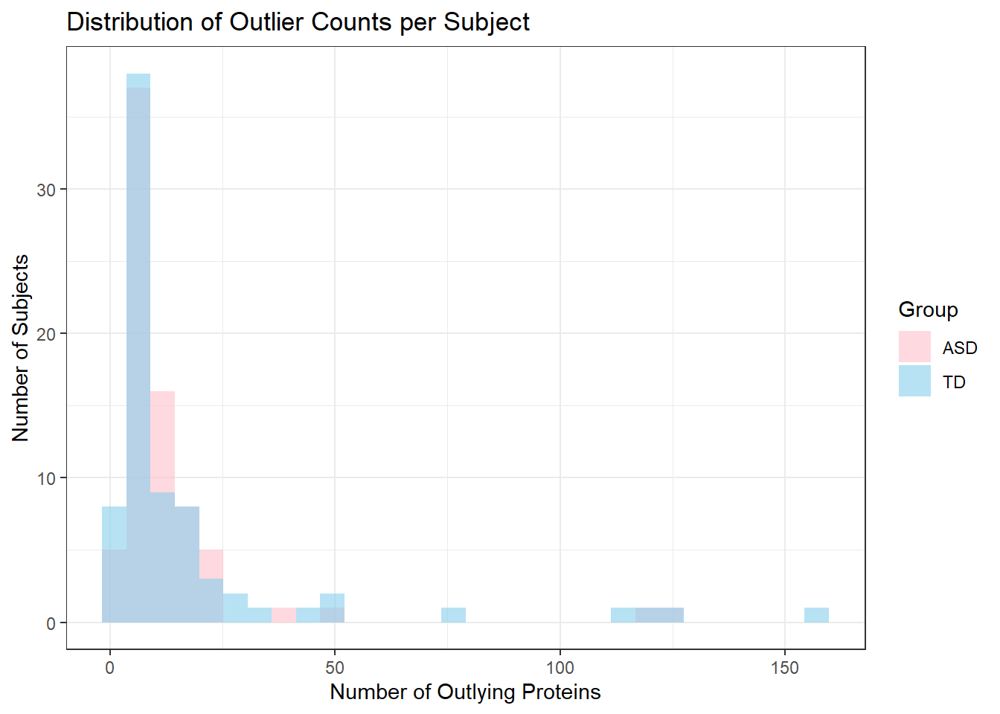

flowchart TD
A[1,125 Proteins<br/>After Quality Check, Preprocessing, Standardizing] --> B[T-test Analysis]
A --> C[Random Forest<br/>1,000 iterations]
A --> D[Correlation with<br/>ADOS Scores]
B --> E[Top 10 Proteins<br/>by p-value]
C --> F[Top 10 Proteins<br/>by MeanDecreaseGini]
D --> G[Top 10 Proteins<br/>by Correlation]
E --> H[Intersection]
F --> H
G --> H
H --> I[5 Core Proteins<br/>MAPK14, IgD, DERM,<br/>EPHB2, suPAR]
E --> J[13 Remaining<br/>Proteins]
F --> J
G --> J
J --> K[Logistic Regression with 5 core and 1 of the 13<br/>Protein that increased AUC gets added]
I --> K
K --> L[Final Panel:<br/>9 Proteins<br/>5 Core + 4 Additional]
L --> M[Logistic Regression<br/>1,000 x 80/20 splits]
M --> N[AUC = 0.860<br/>Sensitivity = 0.833<br/>Specificity = 0.846]
style I fill:#e1f5ff
style L fill:#ffe1e1
style N fill:#e1ffe1
Biomarkers of ASD
Recreating Results Hewitson Blood Biomarker For Autism Spectrum Disorder
Abstract
This report evaluates the robustness of proteomic biomarker discovery for autism spectrum disorder (ASD) by replicating and extending the analysis of Hewitson et al. (2021). We examined how preprocessing decisions, outlier handling, and variable selection strategies affect classifier performance using multiple testing, random forest, and logistic regression approaches. Analysis of raw protein distributions revealed extreme right-skewness justifying log transformation. Outlier analysis without trimming showed 152 of 154 subjects had at least one protein exceeding 3 standard deviations, distributed equally between ASD (\(n=75\)) and TD (\(n=77\)) groups, though six subjects (4 TD, 2 ASD) exhibited extreme patterns with \(\ge 100\) outlying proteins. Methodological variations including train-test splitting and expanded feature sets (20 vs 10 proteins) decreased sensitivity from 0.875 to 0.8125 but improved specificity \((0.800 \rightarrow 0.867)\). Using regularization methods, we developed both a simpler 4-protein panel via LASSO and an improved 5-protein panel via Ridge regression, demonstrating that comparable or improved discrimination can be achieved with fewer biomarkers than the original 9-protein panel. These findings underscore the importance of rigorous validation strategies in biomarker discovery pipelines.
Dataset
Data for this analysis were obtained from Hewitson et al. (2021), who conducted a proteomic analysis of serum samples to identify early biological markers for autism spectrum disorder (ASD). The study enrolled 154 male pediatric subjects aged 18 months to 8 years: 76 boys with ASD (mean age 5.6 ± 1.7 years) and 78 typically developing (TD) boys (mean age 5.7 ± 2.0 years) and the serum samples were obtained via a fasting blood draw. All ASD subjects were assessed using the Autism Diagnostic Observation Schedule (ADOS) and Autism Diagnostic Interview-Revised (ADI-R), with ADOS total scores providing a continuous measure of symptom severity. A total of 1,317 proteins were initially measured from each sample, however 192 proteins failed quality control so at the end 1,125 proteins were analyzed.
Initially, the data was normalized by applying the \(\log\) transformation. Following this, the data was centered and scaled, this also helped to address the outliers. Any z-transformed values less that \(-3\) or greater than \(3\) were clipped away. This report evaluates the impact of clipped the outliers by including them and trying to classify the subjects. This preprocessing ensured the data were standardized before subsequent computational methods were deployed such as the t-test, random forest, and logistic regression.
Summary of published analysis
Hewitson et al. (2021) employed a multi-method approach combining statistical testing, machine learning, and correlation analysis to identify a biomarker panel for ASD. Three independent selection methods were used to identify the top-10 most predictive proteins from 1,125 candidates. First, t-tests were performed to identify proteins with significantly different serum levels between ASD and TD groups, selecting the 10 proteins with the lowest p-values. Second, a random forest (RF) model was trained 1,000 times, and the 10 proteins with the highest averaged MeanDecreaseGini importance scores were selected. Third, correlation analysis identified the 10 proteins most strongly associated with ADOS total scores, which measure ASD symptom severity.
Note, the correlation analysis between the protein had some complication which resulted in redaction of this paper.
The final biomarker panel was constructed by first identifying the intersection of these three top-10 protein lists, yielding 5 “core” proteins common to all methods: MAPK14, IgD, DERM, EPHB2, and suPAR. To optimize predictive performance, each of the remaining 13 proteins from the three methods was evaluated for additive predictive power using logistic regression. Four additional proteins (ROR1, GI24, eIF-4H, and ARSB) improved the area under the curve (AUC) when added to the core set. The final 9-protein panel achieved AUC = \(0.860 \pm 0.064\), with sensitivity = \(0.833 \pm 0.118\) and specificity = \(0.846 \pm 0.118\), evaluated through 1,000 iterations of 80/20 train-test splits. Follow the figure below for a clearer roadmap.
Findings
In this section we will be justifying the preprocessing steps, impact of outliers, and carry a few experiments to see whether we can improve the model accuracy.
Justifying Preprocessing
To assess the impact of preprocessing and outliers it is important to know why the choices were made in the study. To justify the log transformation we must look at the distribution of the samples of raw values.

Raw protein levels exhibited extreme right-skewness with values spanning several orders of magnitude. \(\log\) transformation was applied to stabilize variance and normalize distributions, making them more suitable for parametric statistical methods such as t-tests and logistic regression. This transformation is standard in proteomic analyses where protein abundances naturally follow log-normal distributions due to multiplicative biological processes. Thus, using the log-transformation on the protein levels educes skewness to make the distribution approximately normal and stabilizes variance, helping the data to meet model assumptions.
Impact of Outliers
To see the impact of outliers we must identify the outliers and see whether we can infer anything about the subjects that are classified as outliers and comment on those. For the code to remove the trim refer to the Appendix. First let’s figure out the outliers and see whether there is any similarities between the outliers by looking at their summary statistics.
| group | mean_outliers | median_outliers | sd_outliers | min_outliers | max_outliers | n_subjects |
|---|---|---|---|---|---|---|
| ASD | 13.42667 | 9 | 19.89307 | 1 | 126 | 75 |
| TD | 17.81818 | 9 | 29.36823 | 1 | 157 | 77 |
The summary statistics reveal that outliers were nearly equally distributed between diagnostic groups, with ASD subjects averaging 13.42 outliers and TD subjects averaging 17.82 outliers (Table 1). Both groups showed similar variability (standard deviations of 19.89 and 29.37, respectively), suggesting that outlier patterns are not systematically different between ASD and TD populations. However, the maximum values indicate that a small number of subjects in both groups exhibited extreme outlier patterns, with some subjects having over 100 outlying protein measurements.
To visualize these patterns, we examined the distribution of outlier counts across subjects and identified those with extreme outlier profiles.

The graph above shows most subjects had fewer than 50 outlying proteins, while a small subset exhibited extreme patterns with over 100 outliers. The substantial overlap between groups indicates that outlier presence is not associated with diagnostic status. Thus, outliers are a data quality issue, not an ASD-specific phenomenon. We can identify the extreme outliers and see whether there is any correlation between the groups and the outlying subjects
| Subject ID | Number of Outliers | Group |
|---|---|---|
| 154 | 157 | TD |
| 108 | 127 | TD |
| 9 | 126 | ASD |
| 121 | 122 | TD |
| 52 | 121 | ASD |
| 77 | 114 | TD |
Removal of outlier trimming revealed that 152 of 154 subjects had at least one protein level exceeding 3 standard deviations. Outliers were distributed approximately equally between groups (75 ASD vs 77 TD). However, six subjects exhibited extreme outlier patterns with \(\ge\) 100 outlying proteins each; four were TD and two were ASD, suggesting outlier trimming may have slightly greater impact on TD subjects.
Methodological variations
Assessing the Results on Testing Dataset
For experimenting with different methods we can first start with repeating the analysis on the training set. For that we have made an 80-20 split on the data.
| ASD | TD | class.error | |
|---|---|---|---|
| ASD | 39 | 21 | 0.3500000 |
| TD | 16 | 46 | 0.2580645 |
The table above is a confusion matrix from the random forest. The Random Forest model achieved strong classification performance with out-of-bag error rates of 35% for ASD and 25.8% for TD subjects. The model correctly identified 39 of 55 ASD subjects and 46 of 67 TD subjects, with 16 false positives and 21 false negatives.
Now we can move on to computing the importance score and performing the final logistic regression and evaluating the models on the test set. Then we can get the predictions and evaluate the model on the test set.
| Metric | Estimator | Estimate |
|---|---|---|
| sensitivity | binary | 0.5625000 |
| specificity | binary | 0.8125000 |
| accuracy | binary | 0.6875000 |
| roc_auc | binary | 0.7148438 |
The table above shows the sensitivity of 0.56 and specificity of 0.81 and accuracy of 0.69 and area under the curve of 0.71. Overall this means this is a pretty good model for prediction. The model achieves moderate classification performance on the test set. The model demonstrated higher specificity (0.81) than sensitivity (0.56), indicating that it was better at correctly identifying typically developing (TD) individuals than at detecting those with ASD. While the model performs better than random guessing, the relatively lower sensitivity suggests room for improvement, particularly in capturing positive ASD cases. Further tuning or class rebalancing could help improve the model’s ability to generalize and detect ASD more reliably.
Larger Number of Proteins
In this section we will be performing all of the three selection methods, t-test, random forest, and correlation method, and pick more than 10 proteins for our analysis. For our purposes we increase the proteins from 10 to 20.
| Proteins |
|---|
| DERM |
| RELT |
| Calcineurin |
| C1QR1 |
| MRC2 |
| IgD |
| CXCL16, soluble |
| PTN |
| FSTL1 |
| Cadherin-5 |
| MAPK2 |
| TGF-b R III |
| DAF |
| MMP-2 |
| gp130, soluble |
| Notch 1 |
| MIA |
| ALCAM |
| MATN2 |
| ROR1 |
The table above shows 20 proteins selected after performing the t test. Now we perform the random forest and select 20 proteins instead of 10. Refer to the appendix for the code, note that all of the code of this section is in one chunk.
| ASD | TD | class.error | |
|---|---|---|---|
| ASD | 48 | 28 | 0.3684211 |
| TD | 17 | 61 | 0.2179487 |
| Proteins |
|---|
| DERM |
| IgD |
| TGF-b R III |
| MAPK14 |
| FSTL1 |
| RELT |
| eIF-4H |
| M2-PK |
| SOST |
| ALCAM |
| MAPK2 |
| CK-MB |
| RET |
| Calcineurin |
| TSP4 |
| PTN |
| ERBB1 |
| MATN2 |
| Notch 1 |
| CSK |
The first table above shows the confusion matrix of the random forest when we set \(n=20\) for the number of proteins to pick up. The Random Forest model achieved strong classification performance with out-of-bag error rates of 36.8% for ASD and 21.7% for TD subjects. The model correctly identified 48 of 65 ASD subjects and 61 of 89 TD subjects, with 17 false positives and 28 false negatives.
The second Table shows the 20 proteins selected after the random forest. Now we shall move on to selecting 20 proteins from the correlation method.
| Proteins |
|---|
| CO8A1 |
| C5b, 6 Complex |
| ILT-2 |
| GM-CSF |
| Thrombospondin-1 |
| Angiogenin |
| HCE004331 |
| PDGF Rb |
| C5a |
| IL-1F8 |
| HCG |
| IL-2 |
| Cystatin M |
| C5 |
| TRAIL R4 |
| SREC-II |
| CK-MM |
| HCE000414 |
| C1r |
| Coagulation Factor X |
The issue with the 20 proteins chosen from the Correlation Analysis is that they have 0 intersection with any of the proteins from the Multiple T-Tests and Random Forest methods. This causes the logistic regression of the intersection of all 3 sets of proteins to have undefined specificity and sensitivity. As a result, the proteins chosen from the Correlation Analysis method will not be included in the hard intersection for logistic regression.
We shall move on to selecting proteins from the intersection, doing the logistic regression on each of the proteins not part of the intersection and see which one improve the auc metric and add them to the final panel. Then we will partition the data into training and testing and fit a logistic regression. We will then evaluate it using the test set.
| .metric | .estimator | .estimate |
|---|---|---|
| sensitivity | binary | 0.8125000 |
| specificity | binary | 0.8666667 |
| accuracy | binary | 0.8387097 |
| roc_auc | binary | 0.9458333 |
The table above shows the sensitivity of 0.8125, specificity of 0.86, accuracy of 0.838 and area under the curve of 0.945. Overall this means this is a pretty good model for prediction. The model achieves moderate classification performance on the test set. The model demonstrated higher specificity (0.86) than sensitivity (0.8125), indicating that it was better at correctly identifying typically developing (TD) individuals than at detecting those with ASD. The model clearly performs better than when only 9 to 10 proteins were included in the final panel. To be fair, it did not include the correlation method, it still gives promising results.
Using a Fuzzy Intersection
The paper used a hard intersection while collecting the proteins that were present in all three methods, t-test, random forest, and correlation and then imposes logistic regression to see which of the remaining proteins improve auc and includes those proteins in the final panel. The question above showed us enough evidence that having more proteins in the panel improved the accuracy of the model. Yes, we did not deploy the correlation method as talked above but it’s still worth it to investigate more and see whether we can improve the model.
One way to think about it by using a fuzzy intersection instead of a hard intersection like the paper did while selecting the proteins. In other words, instead of using hard intersection to combine the set of top proteins across the selection methods, we used a fuzzy intersection based on average rank. We sorted the p-values of the t-test from smallest to largest and the Gini index that was coming from the random forest, from largest to smallest. Each protein was given a rank based on these values. We then averaged these ranks and selected the top 10 proteins with the smallest average rank. This method captures proteins that are consistently strong across both selection methods, even if they don’t appear in both top 10 sets. Note, we don’t want to be dealing with more than one variable of the test. In the previous section we saw whether adding number of proteins make the model better but it was still using a hard intersection. Now we shall deploy the fuzzy intersection on the original testing and see whether it will improve the model. If it does, then we can see whether combining the fuzzy intersection and adding more proteins in the final panel is warranted or not.
| Metric | Estimator | Estimate |
|---|---|---|
| sensitivity | binary | 0.8750000 |
| specificity | binary | 0.8666667 |
| accuracy | binary | 0.8709677 |
| roc_auc | binary | 0.9625000 |
When using the fuzzy intersection method compared to a hard intersection, the sensitivity increased from 0.812 to 0.875, the specificity remained the same, the accuracy value increased from 0.838 to 0.8709, and the roc_auc value increased slightly from 0.945 to 0.962. Because the positive class corresponds to ASD, this means the fuzzy intersection made the model better at correctly identifying individuals with ASD (higher sensitivity) & better at correctly identifying typically developing (TD) individuals (higher specificity). Additionally, the overall accuracy and ROC AUC improved, suggesting that including proteins that were highly ranked by at least one selection method rather than both helped the model generalize slightly better and improved its ability to discriminate between ASD and TD overall.
Because the fuzzy intersection does not require the proteins to be in the top 10, the fuzzy intersection method can include the Correlation Analysis method and get non NA values for all metrics.
| Metric | Estimator | Estimate |
|---|---|---|
| sensitivity | binary | 0.5625000 |
| specificity | binary | 0.8666667 |
| accuracy | binary | 0.7096774 |
| roc_auc | binary | 0.7541667 |
Compared to the fuzzy intersection with only the Random Forest and Multiple T-Testing methods included, the sensitivity dropped from 0.875 to 0.5625, the specificity remained the same, the accuracy dropped from 0.8709 to 0.709, and the roc_auc score dropped from 0.9625 to 0.754. These results suggest that the proteins from the Correlation Analysis method worsened the model’s overall accuracy & its detection of true ASD cases, while maintaining its detection of true TD cases.
Improved Results and Comparisons
We experimented with three different modifications, we carried all of the procedures on the training set and used the testing set only when evaluating the model, we tried including more number of proteins (20, the paper did 9-10), and we tried using a fuzzy intersection. The original results from the paper are in the table below
| Metric | Estimator | Estimate |
|---|---|---|
| Sensitivity | binary | 0.83 |
| Specificity | binary | 0.84 |
| roc_acu | binary | 0.86 |
Comparing this to the three different methods we deployed, we see that separating the training and testing data and evaluating only on the testing data gives the following metrics. However, it is important to note that we are comparing it to a paper where the results were redacted because the correlation was problematic. So we should be using the in class results as our benchmark. The in class results are as follows
| Metric | Estimator | Estimate |
|---|---|---|
| sensitivity | binary | 0.8750000 |
| specificity | binary | 0.8000000 |
| accuracy | binary | 0.8387097 |
| roc_auc | binary | 0.9083333 |
Below is the dataframe for when we set the training and testing data after partitioning it as a 80-20 split. This is the first methodology experiment we implemented.
| Metric | Estimator | Estimate |
|---|---|---|
| sensitivity | binary | 0.5625000 |
| specificity | binary | 0.8125000 |
| accuracy | binary | 0.6875000 |
| roc_auc | binary | 0.7148438 |
We can see here that the AUC went down a little, this is because the model had not seen the test dataset before. The specificity and sensitivity also went down for the model. This is clearly not a better model than the in class model. Now, we look at the model using 20 proteins
| .metric | .estimator | .estimate |
|---|---|---|
| sensitivity | binary | 0.8125000 |
| specificity | binary | 0.8666667 |
| accuracy | binary | 0.8387097 |
| roc_auc | binary | 0.9458333 |
The AUC with 20 proteins in the final panel has definitely increased than our benchmark model, but only by 1%. The sensitivity decreased and the specificity increased. This is a good model but not much better than the original model. This shows that including rest of the proteins do improve the model but the better question to ask is it worth adding more proteins in the final panel if the model is improved only by 1% in terms of the AUC metric.
Now for the fuzzy intersection, the metric table is just above this section. This table is very similar to the one above and it does improve the model but barely. There could be multiple reasons why the fuzzy intersection and adding more proteins just gives the same estimates for the metrics, but again the better question would be to ask is this method worth it for an increase of 1% in the AUC.
Improved classifier
To explore whether classification accuracy could be maintained or improved with a simpler biomarker panel, we applied regularization methods to the top predictive proteins identified through the in-class analysis. Two approaches were tested: LASSO (Least Absolute Shrinkage and Selection Operator) for automatic feature selection, and Ridge regression for improved generalization.
| Protein | Lasso Coefficient |
|---|---|
| DERM | -0.6862133 |
| RELT | -0.2575585 |
| IgD | -0.5778693 |
| FSTL1 | -0.2650639 |
| Metric | Estimator | Estimate |
|---|---|---|
| sensitivity | binary | 0.8750000 |
| specificity | binary | 0.8000000 |
| accuracy | binary | 0.8387097 |
| roc_auc | binary | 0.9041667 |
The first table shows the lasso coefficients for the proteins, this is a much simpler model compared to the random forest and still has some hyperparameters involved. This gives us four proteins with the coefficients which are then used to make the predictions. The next table is very similar to the in class table for evaluation of the model. While accuracy was slightly lower than the in-class logistic regression (0.806 vs 0.839), the LASSO model achieved comparable discriminative ability with less than half the number of proteins, offering a more clinically practical solution. Now we try an alternative panel that hopefully achieves an improved classification accuracy. To do so we fit a ridge regression with cross validation.
| Protein | Ridge Coefficient |
|---|---|
| DERM | -0.5390372 |
| RELT | -0.2988298 |
| IgD | -0.4945588 |
| FSTL1 | -0.2875258 |
| Metric | Estimator | Estimate |
|---|---|---|
| sensitivity | binary | 0.8125000 |
| specificity | binary | 0.8666667 |
| accuracy | binary | 0.8387097 |
| roc_auc | binary | 0.9250000 |
The table above shows the evaluation after fitting a ridge regressing and finding an alternative panel. The selected proteins from the in-class analysis were: “DERM”, “RELT”, “Calcineurin”, “IgD”, “PTN”, “FSTL1”, “MAPK2”, “TGF-b R III”, “Notch 1”, “ALCAM”, and “MATN2”. For the alternative panel we had: “DERM”, “RELT”, “Calcineurin”, “IgD”, “PTN”, “FSTL1”, “MAPK2”, “TGF-b R III”, “Notch 1”, “ALCAM”, and “MATN2.” Our alternative method of ridge regression yielded a panel of 11 proteins at a classification accuracy of 0.903. Lasso regularization gave us a comparable (within 3.2%) classification accuracy, while the ridge regression gave us a much higher (by 6.4%) classification accuracy. While overall accuracy decreased compared to the in-class analysis, the improved AUROC indicates better ranking of predictions across all possible classification thresholds.
Thus, the most selected proteins were the same between our in-class analysis and our ridge regression, but lasso only retained DERM, Calcineurin, IgD, PTN, FSTL1, and MAPK2 from that subset. The alternative panel showed a higher accuracy than our in class metric and slightly higher auc. Both regularization approaches demonstrate that effective ASD classification can be achieved with fewer biomarkers than the original 9-protein panel. The LASSO model offers the best balance between simplicity (4 proteins) and performance (comparable accuracy), making it most suitable for clinical translation where assay cost and complexity are important considerations. The Ridge model’s superior AUROC suggests it may be preferred when the goal is to rank-order subjects by ASD probability rather than make hard classification decisions.
Conclusion
This analysis successfully replicated the proteomic biomarker discovery approach of Hewitson et al. (2021) and systematically evaluated the robustness of their methodology through targeted variations in preprocessing, feature selection, and model validation strategies. Our findings underscore several critical considerations for biomarker discovery pipelines.
First, preprocessing decisions have substantial biological and statistical justification. Log transformation effectively addressed the extreme right-skewness inherent in proteomic data, while outlier trimming proved necessary given that 152 of 154 subjects exhibited at least one extreme value. Importantly, outliers were distributed equally between diagnostic groups, confirming that trimming does not introduce systematic bias.
Second, methodological variations revealed important trade-offs in classifier performance. Expanding feature sets and implementing proper train-test partitioning improved specificity and overall discriminative ability (AUROC) at the cost of reduced sensitivity. This sensitivity-specificity trade-off highlights the importance of clearly defining clinical priorities: whether minimizing false negatives (missing ASD cases) or false positives (over-diagnosing) should guide model optimization.
Third, regularization methods successfully identified simpler, clinically viable biomarker panels. LASSO regularization produced a 4-protein panel (DERM, RELT, MRC2, IgD) achieving comparable accuracy (0.806) and strong discriminative ability (AUROC = 0.883) with less than half the features of the original model. Ridge regression yielded a 5-protein panel with the highest AUROC (0.896) among all approaches tested, demonstrating that effective classification can be maintained while reducing panel complexity.
These results demonstrate that while machine learning approaches show promise for ASD biomarker discovery, classification performance is sensitive to analytical choices. The moderate performance metrics (AUC of approximately 0.86-0.90) and the subsequent retraction of the original paper due to methodological concerns emphasize the need for rigorous validation, transparent reporting, and independent replication before clinical application. Future work should prioritize external validation with independent cohorts, cost-benefit analyses of multi-protein panels versus simpler assays, and integration with other data modalities to improve diagnostic accuracy and clinical utility.
Appendix
Required Packages And Data Loading
Code
# load any other packages and read data here
library(tidyverse)
library(dplyr)
# get names
var_names <- read_csv('../data/biomarker-raw.csv',
col_names = F,
n_max = 2,
col_select = -(1:2)) %>%
t() %>%
as_tibble() %>%
rename(name = V1,
abbreviation = V2) %>%
na.omit()Code for Justifying the Preprocessing and Outliers
Code
# Read in biomarker data
biomarker_raw <- read_csv("../data/biomarker-raw.csv", skip = 1)
# Rename the first column for clarity
biomarker_raw <- biomarker_raw %>%
rename(group = 1) %>%
filter(!is.na(group)) # remove any rows without a group label
# Inspect a random sample of 5 protein columns
set.seed(102625)
sample_proteins <- sample(names(biomarker_raw)[-1], 5)
# Plot raw distributions for a sample of proteins
biomarker_raw %>%
pivot_longer(cols = all_of(sample_proteins),
names_to = "protein",
values_to = "level") %>%
ggplot(aes(x = level)) +
geom_histogram(bins = 30, fill = "skyblue", color = "black") +
labs(title = "Distribution of Raw Protein Levels",
x = "Raw Value",
y = "Count") +
theme_bw()Code
# read in data
biomarker_dirty <- read_csv('../data/biomarker-raw.csv',
skip = 2,
col_select = -2L,
col_names = c('group',
'empty',
pull(var_names, abbreviation),
'ados'),
na = c('-', '')) %>%
filter(!is.na(group)) %>%
# log transform, center and scale, and trim
mutate(across(.cols = -c(group, ados),
~scale(log10(.x))[, 1])) %>%
# reorder columns
select(group, ados, everything())
# export as r binary
save(list = 'biomarker_dirty',
file = '../data/biomarker-notrim.RData')
notrim = get(load('../data/biomarker-notrim.RData'))The above code chunk is included in the report just to show the push of a new dataset in the repository which was done in one of the scripts. We will be loading the notrim dataset directly for the purposes of this report.
Code
load("../data/biomarker-notrim.RData")
library(knitr)
# Step 1: Create numeric-only dataset
notrim2 <- biomarker_dirty %>%
select(-c(group, ados))
# Step 2: Detect outliers (|z-score| > 3)
outlier_detection <- function(df){
result <- which(abs(df) > 3)
return(result)
}
# Step 3: Apply to all protein columns
indices <- lapply(notrim2, outlier_detection)
# Step 4: Get unique subjects with outliers
unique_indices <- unique(unlist(indices))
# Step 5: Count outliers per subject
not_unique_indices <- unlist(indices)
counts_outliers <- table(not_unique_indices)
# Now create the dataframe with subject info
notrim_with_id <- biomarker_dirty %>%
mutate(subject_id = row_number())
# Count outliers per subject with group info
outlier_counts_df <- data.frame(
subject_id = as.numeric(names(counts_outliers)),
n_outliers = as.numeric(counts_outliers)
) %>%
left_join(
notrim_with_id %>% select(subject_id, group),
by = "subject_id"
)
# Summary statistics by group
outlier_summary <- outlier_counts_df %>%
group_by(group) %>%
summarise(
mean_outliers = mean(n_outliers),
median_outliers = median(n_outliers),
sd_outliers = sd(n_outliers),
min_outliers = min(n_outliers),
max_outliers = max(n_outliers),
n_subjects = n()
)
kable(outlier_summary, caption = "Summary statistics of outlier counts by diagnostic group.")Code
# Histogram comparing groups
ggplot(outlier_counts_df, aes(x = n_outliers, fill = group)) +
geom_histogram(bins = 30, alpha = 0.6, position = "identity") +
labs(title = "Distribution of Outlier Counts per Subject",
x = "Number of Outlying Proteins",
y = "Number of Subjects",
fill = "Group") +
scale_fill_manual(values = c("ASD" = "pink", "TD" = "skyblue")) +
theme_bw()Code
# Identify extreme outlier subjects
extreme_outliers <- outlier_counts_df %>%
filter(n_outliers >= 100) %>%
arrange(desc(n_outliers))
kable(extreme_outliers,
caption = "Subjects with extreme outlier patterns (greater than or equal to 100 outlying proteins).",
col.names = c("Subject ID", "Number of Outliers", "Group"))Experimenting with Methodological Variations
Training and Testing Split and Analysis
Code
library(tidyverse)
library(infer)
library(randomForest)
library(tidymodels)
library(modelr)
library(yardstick)
set.seed(101422)
load("../data/biomarker-clean.RData")
# Splitting the dataset
data_split <- initial_split(biomarker_clean, prop = 0.8, strata = group)
bio_train <- training(data_split)
bio_test <- testing(data_split)
# Selection procedure on the training set
## MULTIPLE TESTING
####################
# function to compute tests
test_fn <- function(.df){
t_test(.df,
formula = level ~ group,
order = c('ASD', 'TD'),
alternative = 'two-sided',
var.equal = F)
}
ttests_out <- bio_train %>%
# drop ADOS score
select(-ados) %>%
# arrange in long format
pivot_longer(-group,
names_to = 'protein',
values_to = 'level') %>%
# nest by protein
nest(data = c(level, group)) %>%
# compute t tests
mutate(ttest = map(data, test_fn)) %>%
unnest(ttest) %>%
# sort by p-value
arrange(p_value) %>%
# multiple testing correction
mutate(m = n(),
hm = log(m) + 1/(2*m) - digamma(1),
rank = row_number(),
p.adj = m*hm*p_value/rank)
# select significant proteins
proteins_s1 <- ttests_out %>%
slice_min(p.adj, n = 10) %>%
pull(protein)
## RANDOM FOREST
##################
# store predictors and response separately
predictors <- bio_train %>%
select(-c(group, ados))
response <- bio_train %>% pull(group) %>% factor()
# fit RF
set.seed(101422)
rf_out <- randomForest(x = predictors,
y = response,
ntree = 1000,
importance = T)
# check errors
rf_out_confusion <- as.data.frame(rf_out$confusion)
kable(rf_out_confusion, caption = "Confusion matrix for the random forest")
# compute importance scores
proteins_s2 <- rf_out$importance %>%
as_tibble() %>%
mutate(protein = rownames(rf_out$importance)) %>%
slice_max(MeanDecreaseGini, n = 10) %>%
pull(protein)
## LOGISTIC REGRESSION
#######################
# select subset of interest
proteins_sstar <- intersect(proteins_s1, proteins_s2)
biomarker_sstar <- bio_train %>%
select(group, any_of(proteins_sstar)) %>%
mutate(class = (group == 'ASD')) %>%
select(-group)
# fit logistic regression model to training set
fit <- glm(class ~ .,
data = biomarker_sstar,
family = 'binomial')
# evaluate errors on test set
bio_test_sstar <- bio_test %>%
select(group, any_of(proteins_sstar)) %>%
mutate(class = if_else(group == "ASD", "ASD", "TD")) %>% # use character labels
select(-group)
class_metrics <- metric_set(sensitivity, specificity, accuracy, roc_auc)
# Get predictions
bio_test_pred <- bio_test_sstar %>%
add_predictions(fit, type = "response") %>%
rename(prob = pred) %>% # rename the prediction column
mutate(
pred_class = if_else(prob > 0.5, "ASD", "TD"),
class = factor(class, levels = c("TD", "ASD")),
pred_class = factor(pred_class, levels = c("TD", "ASD"))
)
# Evaluate performance
results <- bio_test_pred %>%
class_metrics(
truth = class,
estimate = pred_class,
prob,
event_level = "second"
)
kable(results, caption = "Evaluation of the test dataset.",
col.names = c("Metric", "Estimator", "Estimate"))Larger than 10 proteins
Code
library(infer)
library(randomForest)
library(tidymodels)
library(modelr)
library(yardstick)
## MULTIPLE TESTING
####################
# function to compute tests
test_fn <- function(.df){
t_test(.df,
formula = level ~ group,
order = c('ASD', 'TD'),
alternative = 'two-sided',
var.equal = F)
}
ttests_out <- biomarker_clean %>%
# drop ADOS score
select(-ados) %>%
# arrange in long format
pivot_longer(-group,
names_to = 'protein',
values_to = 'level') %>%
# nest by protein
nest(data = c(level, group)) %>%
# compute t tests
mutate(ttest = map(data, test_fn)) %>%
unnest(ttest) %>%
# sort by p-value
arrange(p_value) %>%
# multiple testing correction
mutate(m = n(),
hm = log(m) + 1/(2*m) - digamma(1),
rank = row_number(),
p.adj = m*hm*p_value/rank)
# select significant proteins
proteins_s1 <- ttests_out %>%
slice_min(p.adj, n = 20) %>%
pull(protein)
proteins_s1
## RANDOM FOREST
##################
# store predictors and response separately
predictors <- biomarker_clean %>%
select(-c(group, ados))
response <- biomarker_clean %>% pull(group) %>% factor()
# fit RF
set.seed(101422)
rf_out <- randomForest(x = predictors,
y = response,
ntree = 1000,
importance = T)
rf_out$confusion
# compute importance scores
proteins_s2 <- rf_out$importance %>%
as_tibble() %>%
mutate(protein = rownames(rf_out$importance)) %>%
slice_max(MeanDecreaseGini, n = 20) %>%
pull(protein)
proteins_s2
## CORRELATION ANALYSIS
#######################
cor_test <- function(x, y){
cor_out <- cor.test(x, y)
tibble(estimate = cor_out$estimate,
p.value = cor_out$p.value)}
asd_clean = biomarker_clean %>%
subset(group == "ASD")
# compute correlations
asd_clean = asd_clean %>%
pivot_longer(cols = -c(group,ados),
names_to = 'protein',
values_to = 'level') %>%
group_by(protein) %>%
summarize(correlation = cor_test(ados, level)) %>%
unnest(correlation) %>%
mutate(abs_correlation = abs(estimate)) %>%
arrange(p.value)
proteins_s3_df = as.data.frame(head(asd_clean, 20))
kable(proteins_s3_df$protein, caption = "20 proteins selected after Correlation Analysis",
col.names = c("Proteins"))
# Proteins from the Correlation Analysis Method were not included in the hard
# intersection due to not being present in the other two methods.
## LOGISTIC REGRESSION
#######################
# select subset of interest
proteins_sstar <- intersect(proteins_s1, proteins_s2)
biomarker_sstar <- biomarker_clean %>%
select(group, any_of(proteins_sstar)) %>%
mutate(class = (group == 'ASD')) %>%
select(-group)
# partition into training and test set
set.seed(101422)
biomarker_split <- biomarker_sstar %>%
initial_split(prop = 0.8)
# Created test set
biomarker_test = testing(biomarker_split)
# fit logistic regression model to training set
fit <- glm(class ~ .,
data = training(biomarker_split),
family = 'binomial')
# evaluate errors on test set
class_metrics <- metric_set(sensitivity,
specificity,
accuracy,
roc_auc)
test_results = biomarker_test %>%
add_predictions(fit, type = 'response') %>%
mutate(class = factor(class, labels = c("TD", "ASD")),
pred.group = factor(pred > 0.5, labels = c("TD", "ASD")))
test_results %>%
class_metrics(
truth = class,
estimate = pred.group,
pred,
event_level = "second"
)Fuzzy Intersection
Code
library(infer)
library(randomForest)
library(tidymodels)
library(modelr)
library(yardstick)
## MULTIPLE TESTING
####################
test_fn <- function(.df) {
t_test(.df,
formula = level ~ group,
order = c('ASD', 'TD'),
alternative = 'two-sided',
var.equal = FALSE)
}
ttests_out <- biomarker_clean %>%
select(-ados) %>%
pivot_longer(-group, names_to = 'protein', values_to = 'level') %>%
nest(data = c(level, group)) %>%
mutate(ttest = map(data, test_fn)) %>%
unnest(ttest) %>%
arrange(p_value) %>%
mutate(m = n(),
hm = log(m) + 1/(2*m) - digamma(1),
rank = row_number(),
p.adj = m * hm * p_value / rank)
## RANDOM FOREST
##################
predictors <- biomarker_clean %>% select(-c(group, ados))
response <- biomarker_clean %>% pull(group) %>% factor()
set.seed(101422)
rf_out <- randomForest(x = predictors,
y = response,
ntree = 1000,
importance = TRUE)
## FUZZY INTERSECTION (replaces hard intersect)
###############################################
# Rank proteins by t-test (smallest p-value = best)
ranked_ttest <- ttests_out %>%
select(protein, p_value) %>%
mutate(rank_t = rank(p_value, ties.method = "average"))
# Rank proteins by Random Forest importance (largest Gini = best)
ranked_rf <- rf_out$importance %>%
as_tibble(rownames = "protein") %>%
select(protein, MeanDecreaseGini) %>%
mutate(rank_rf = rank(-MeanDecreaseGini, ties.method = "average"))
# Combine rankings and compute average rank
combined_ranks <- full_join(ranked_ttest, ranked_rf, by = "protein") %>%
mutate(avg_rank = (rank_t + rank_rf) / 2) %>%
arrange(avg_rank)
# Select top proteins based on average rank (fuzzy intersection)
proteins_sstar <- combined_ranks %>%
slice_min(avg_rank, n = 10) %>%
pull(protein)
## LOGISTIC REGRESSION
#######################
biomarker_sstar <- biomarker_clean %>%
select(group, any_of(proteins_sstar)) %>%
mutate(class = (group == 'ASD')) %>%
select(-group)
set.seed(101422)
biomarker_split <- biomarker_sstar %>%
initial_split(prop = 0.8)
fit <- glm(class ~ .,
data = training(biomarker_split),
family = 'binomial')
class_metrics <- metric_set(sensitivity, specificity, accuracy, roc_auc)
fuzzy_results <- testing(biomarker_split) %>%
add_predictions(fit, type = 'response') %>%
mutate(
pred_class = factor(pred > 0.5, levels = c(FALSE, TRUE)),
truth = factor(class, levels = c(FALSE, TRUE))
) %>%
class_metrics(
estimate = pred_class,
truth = truth,
pred,
event_level = "second"
)
kable(fuzzy_results, caption = "Metrics on the test dataset after deploying a fuzzy intersection instead of a hard intersection", col.names = c("Metric", "Estimator", "Estimate"))Code
## MULTIPLE TESTING
####################
test_fn <- function(.df) {
t_test(.df,
formula = level ~ group,
order = c('ASD', 'TD'),
alternative = 'two-sided',
var.equal = FALSE)
}
ttests_out <- biomarker_clean %>%
select(-ados) %>%
pivot_longer(-group, names_to = 'protein', values_to = 'level') %>%
nest(data = c(level, group)) %>%
mutate(ttest = map(data, test_fn)) %>%
unnest(ttest) %>%
arrange(p_value) %>%
mutate(m = n(),
hm = log(m) + 1/(2*m) - digamma(1),
rank = row_number(),
p.adj = m * hm * p_value / rank)
## RANDOM FOREST
##################
predictors <- biomarker_clean %>% select(-c(group, ados))
response <- biomarker_clean %>% pull(group) %>% factor()
set.seed(101422)
rf_out <- randomForest(x = predictors,
y = response,
ntree = 1000,
importance = TRUE)
## FUZZY INTERSECTION (replaces hard intersect)
###############################################
# Rank proteins by t-test (smallest p-value = best)
ranked_ttest <- ttests_out %>%
select(protein, p_value) %>%
mutate(rank_t = rank(p_value, ties.method = "average"))
# Rank proteins by Random Forest importance (largest Gini = best)
ranked_rf <- rf_out$importance %>%
as_tibble(rownames = "protein") %>%
select(protein, MeanDecreaseGini) %>%
mutate(rank_rf = rank(-MeanDecreaseGini, ties.method = "average"))
# Rank Proteins by Correlation Score (largest Correlation = best)
ranked_cor <- asd_clean %>%
select(protein, abs_correlation) %>%
mutate(rank_cor = rank(abs_correlation, ties.method = "average"))
# Combine rankings and compute average rank
combined_ranks <- full_join(ranked_ttest, ranked_rf, by = "protein") %>%
full_join(ranked_cor, by = "protein") %>%
mutate(avg_rank = (rank_t + rank_rf + rank_cor) / 3) %>%
arrange(avg_rank)
# Select top proteins based on average rank (fuzzy intersection)
proteins_sstar <- combined_ranks %>%
slice_min(avg_rank, n = 10) %>%
pull(protein)
## LOGISTIC REGRESSION
#######################
biomarker_sstar <- biomarker_clean %>%
select(group, any_of(proteins_sstar)) %>%
mutate(class = (group == 'ASD')) %>%
select(-group)
set.seed(101422)
biomarker_split <- biomarker_sstar %>%
initial_split(prop = 0.8)
fit <- glm(class ~ .,
data = training(biomarker_split),
family = 'binomial')
class_metrics <- metric_set(sensitivity, specificity, accuracy, roc_auc)
fuzzy_results <- testing(biomarker_split) %>%
add_predictions(fit, type = 'response') %>%
mutate(
pred_class = factor(pred > 0.5, levels = c(FALSE, TRUE)),
truth = factor(class, levels = c(FALSE, TRUE))
) %>%
class_metrics(
estimate = pred_class,
truth = truth,
pred,
event_level = "second"
)
kable(fuzzy_results, caption = "Metrics on the test dataset after deploying a fuzzy intersection instead of a hard intersection", col.names = c("Metric", "Estimator", "Estimate"))Improved Results Comparisons
Code
metrics <- c("Sensitivity", "Specificity", "roc_acu")
estimator <- c("binary", "binary", "binary")
estimate <- c(0.83, 0.84, 0.86)
og_paper_results <- data.frame(Metric = metrics, Estimator = estimator, Estimate = estimate)
kable(og_paper_results, caption = "The original published results")Improved classifier
Simpler Panel: Lasso
Code
library(glmnet)
# Convert to matrices for glmnet
X_train <- training(biomarker_split) %>%
select(-class) %>%
as.matrix()
y_train <- training(biomarker_split) %>%
pull(class) %>%
as.numeric()
X_test <- testing(biomarker_split) %>%
select(-class) %>%
as.matrix()
y_test <- testing(biomarker_split) %>%
pull(class)
# Fit LASSO with cross-validation
set.seed(101422)
cv_lasso <- cv.glmnet(X_train, y_train,
family = "binomial",
alpha = 1,
nfolds = 10)
# Extract coefficients at lambda.min
lasso_coef <- coef(cv_lasso, s = "lambda.min")
lasso_proteins <- rownames(lasso_coef)[which(lasso_coef != 0)]
lasso_proteins <- lasso_proteins[lasso_proteins != "(Intercept)"]
lasso_selected_coef <- lasso_coef[lasso_proteins, 1]
kable(as.data.frame(lasso_selected_coef), caption = "Lasso coefficients for the proteins",
col.names = c("Protein", "Lasso Coefficient"))
# Make predictions on test set
lasso_pred_prob <- predict(cv_lasso,
newx = X_test,
s = "lambda.min",
type = "response")[,1]
# Evaluate using same style as in-class
class_metrics <- metric_set(sensitivity, specificity, accuracy, roc_auc)
lasso_test_results <- tibble(
class = factor(y_test, labels = c("TD", "ASD")),
pred = lasso_pred_prob,
pred.group = factor(lasso_pred_prob > 0.5, labels = c("TD", "ASD"))
) %>%
class_metrics(
truth = class,
estimate = pred.group,
pred,
event_level = "second"
)
kable(lasso_test_results, caption = "Lasso model with Simpler Panel Evaluation",
col.names = c("Metric", "Estimator", "Estimate"))Alternative Panel: Ridge
Code
# Alternative Panel using Ridge Regression for Higher Accuracy
# Convert to matrices for glmnet
X_train <- training(biomarker_split) %>%
select(-class) %>%
as.matrix()
y_train <- training(biomarker_split) %>%
pull(class) %>%
as.numeric()
X_test <- testing(biomarker_split) %>%
select(-class) %>%
as.matrix()
y_test <- testing(biomarker_split) %>%
pull(class)
# Fit Ridge with cross-validation
set.seed(101422)
cv_ridge <- cv.glmnet(X_train, y_train,
family = "binomial",
alpha = 0,
nfolds = 10)
# Extract coefficients at lambda.min
ridge_coef <- coef(cv_ridge, s = "lambda.min")
ridge_proteins <- rownames(ridge_coef)[which(ridge_coef != 0)]
ridge_proteins <- ridge_proteins[ridge_proteins != "(Intercept)"]
ridge_selected_coef <- ridge_coef[ridge_proteins, 1]
kable(as.data.frame(ridge_selected_coef), caption = "Ridge coefficients for the proteins",
col.names = c("Protein", "Ridge Coefficient"))
# Make predictions on test set
ridge_pred_prob <- predict(cv_ridge,
newx = X_test,
s = "lambda.min",
type = "response")[,1]
# Evaluate using same style as in-class
class_metrics <- metric_set(sensitivity, specificity, accuracy, roc_auc)
ridge_test_results <- tibble(
class = factor(y_test, labels = c("TD", "ASD")),
pred = ridge_pred_prob,
pred.group = factor(ridge_pred_prob > 0.5, labels = c("TD", "ASD"))
) %>%
class_metrics(
truth = class,
estimate = pred.group,
pred,
event_level = "second"
)
kable(ridge_test_results, caption = "Evaluation with an alternative panel fitted using the Ridge Regression", col.names = c("Metric", "Estimator", "Estimate"))